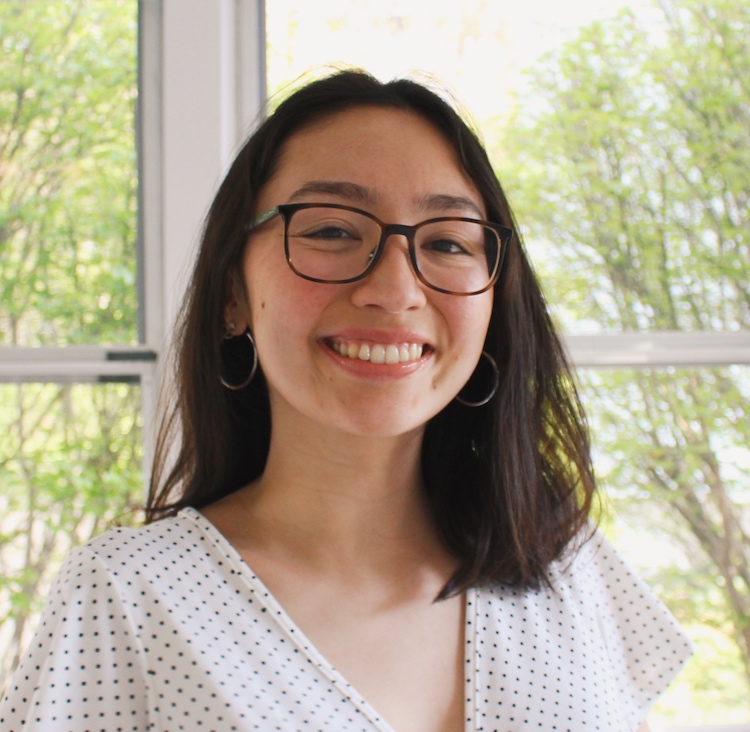

I'm a software engineer who is passionate about learning, encouraging diversity in STEM, and creating projects that help people.
Hi! I'm Ava. I'm studying computer science at the University of
Southern California and will be graduating in May 2022. I have
always been driven by my passion for learning to step out of my
comfort zone and try new things, whether that means graduating
high school a year early or deciding to live abroad in order to
improve my Spanish speaking skills. I also care deeply about
promoting diversity in STEM because I understand how powerful and
life-changing it can be to have a mentor who you can see yourself
in; in order to give back, I consistently participate in and run
volunteering events focused on encouraging young girls to pursue
computer science. Finally, throughout my time in college I've come
to realize that the potential positive impact that a project can
have motivates me to continue creating, innovating, trying, and
sometimes, failing, and I know that I want to continue to use my
technical skills for social good in the future.
Feel free to reach out to me if you have any questions about getting started in tech, encouraging diversity in tech, or opportunities in tech! I'd love to chat. You can reach me at avarosedelacruz@gmail.com or on LinkedIn.
Feel free to reach out to me if you have any questions about getting started in tech, encouraging diversity in tech, or opportunities in tech! I'd love to chat. You can reach me at avarosedelacruz@gmail.com or on LinkedIn.

Skills
Languages: Java, C++, JavaScript, Python, HTML/CSS, Objective-C, PHP
Development: AWS, React.js, Express.js, Node.js, MySQL, REST APIs, AJAX, jQuery, Git
Design: Figma, Canva